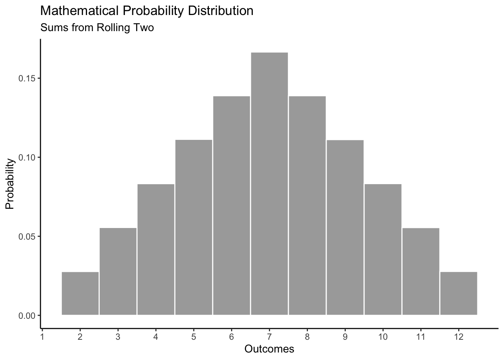
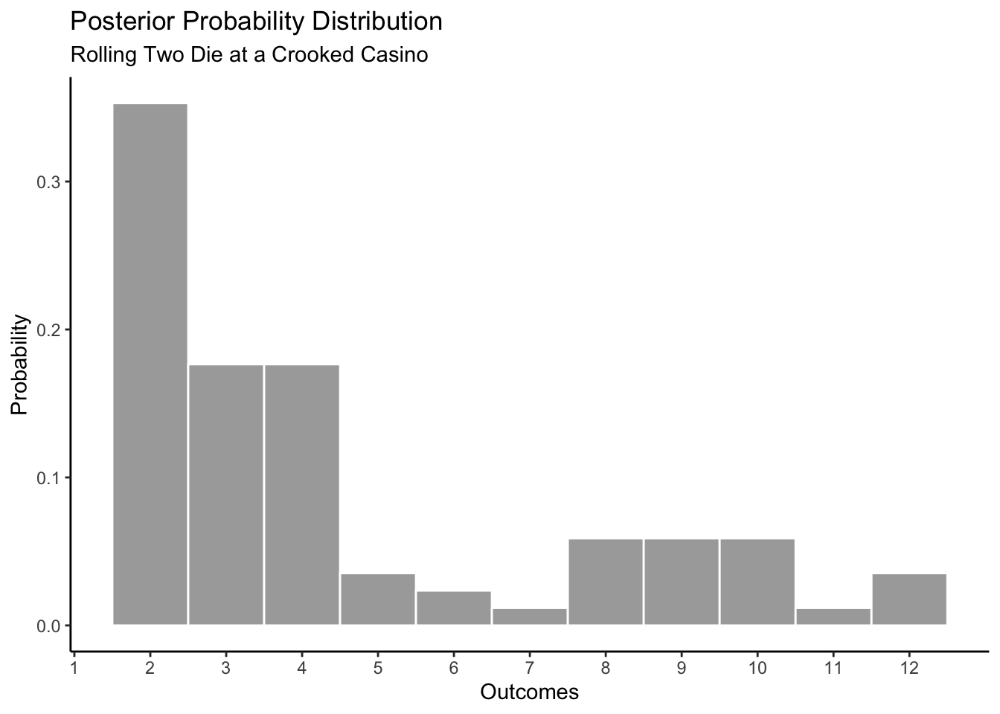
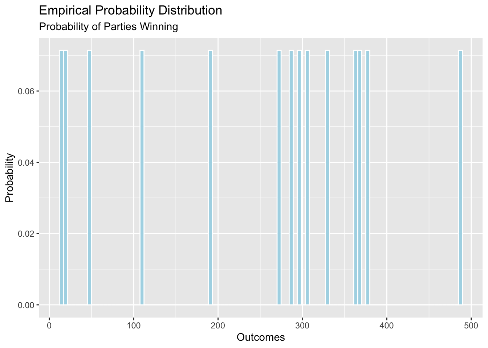
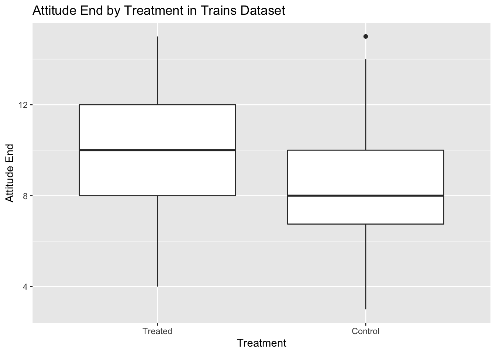
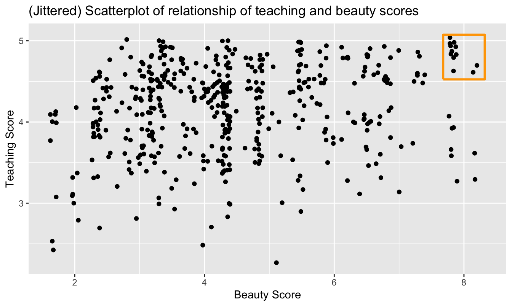
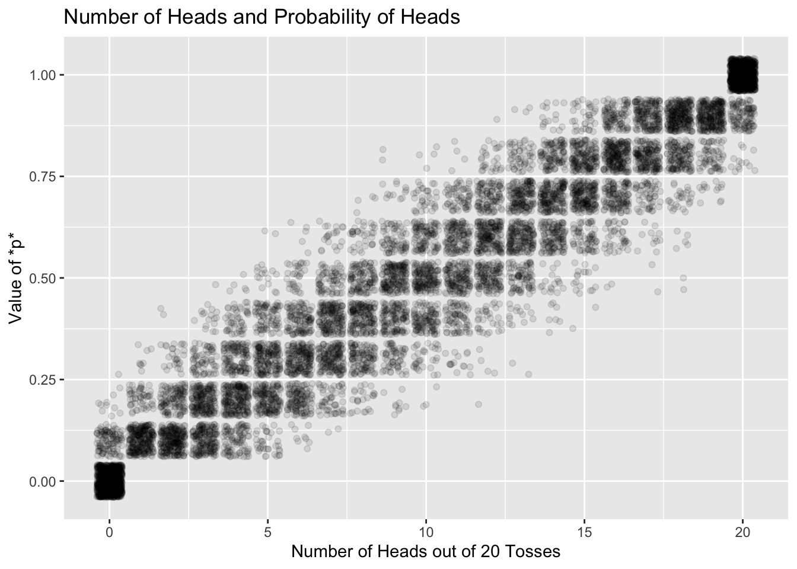

Chapter 5 Probability
The central tension, and opportunity, in data science is the interplay between the data and the science, between our empirical observations and the models which we use to understand them. Probability is the language we use to explore that interplay; it connects models to data, and data to models.
5.1 Probability distributions
 FIGURE 5.1: Dice and Probability.
FIGURE 5.1: Dice and Probability.
What does it mean that Trump has a 30% chance of winning re-election this fall? That there is a 90% probability of rain today? That the die at the casino is unfair? If I roll that die 10 times and five of those times I get a three, how likely is it that the die is unfair?
Probability is about quantifying uncertainty. We can think of probability as a proportion. The probability of an event occurring is a number from 0 to 1, where 1 means that the event is 100% certain.
Let’s begin with the simplest events: coin flips and dice rolls. If the die and the coins are fair, we can operate under the assumption that all outcomes are equally likely.
This allows us to make the following statements:
- The probability of rolling a 1 or 2 is 2/6, or 1/3.
- The probability of rolling a 1, 2, 3, 4, 5, or 6 is 1.
- The probability of flipping a coin and getting tails is 1/2.
For the purposes of this course, a probability distribution is a mathematical object that covers a set of outcomes, where each distinct outcome has a chance of occurring between 0 and 1 inclusive. The set of possible outcomes — heads or tails for the coin, 1 through 6 for the die — can be either discrete or continuous. This set of outcomes is the domain of the probability distribution. There are three types of probability distributions: mathematical, empirical, and posterior. Let’s walk through some examples to better understand each type of probability distribution.
Before we continue, we should be familiar with the notation used in this chapter. Whenever we are talking about a specific probability (represented by a single value), we will use \(p\) with a subscript. For instance, \(p_h\) = 0.5 denotes the probability of getting heads on a coin toss when the coin is fair. \(p_t\) denotes the probability of getting tails on the coin toss. However, when we are referring to the entire probability distribution over a set of outcomes, we will use \(p\) with parentheses. For example, the probability distribution of a coin toss is \(p(coin)\). That said, \(p(coin)\) is composed of all the two specific probabilities mapped from the domain.
5.1.1 Flipping a coin
A mathematical distribution is based on mathematical formulas. Assuming that the dice is perfectly fair, we should get heads as many times as we get tails.

An empirical distribution is based on data. You can think of this as the probability distribution created by running a simulation. In theory, if we increase the number of coins we flip in our simulation, the empirical distribution will look more and more similar to the mathematical distribution. The probability distribution is the Platonic form. The empirical distribution will often look like the mathematical probability distribution, but it will rarely be exactly the same.
In this simulation, there are 49 heads and 51 tails. The outcome will vary every time we run the simulation, but the proportion of heads to tails should not be too different if this coin is fair.

An posterior distribution is based on beliefs and expectations. It displays your belief about things you can’t see right now. You may have posterior distributions for events in the past, present, or future.
In the case of the coin toss, the posterior distribution changes depending on your beliefs. For instance, let’s say your friend brought a coin to school and asked to bet you. If the result is heads, you have to pay them $5.
This makes you suspicious; your posterior distribution would reflect this. You might believe that \(p_h\) is 0.95 while \(p_t\) is 0.05.

5.1.2 Rolling two die
Our mathematical distribution tells us that, with a fair dice, the probability of getting 1, 2, 3, 4, 5, and 6 are equal: there is a 1/6 chance of each. When we roll two die at the same time and sum the values, the numbers closes to the middle (ex. 6, 7, 8) are more common sums than numbers at the very edge (ex. 2, 12) because there are more combinations of numbers that add up to the middle values.

We get an empirical distribution by running a simulation and rolling two die a hundred times. The result is not identical to the mathematical distribution because of the inherent randomness of the real world. We can observe that the \(p_2\) and \(p_12\), which are displayed on the left and right most ends of the distribution, are far lower than the \(p_6\), for example.

The posterior distribution for rolling one dice a hundred depends on your expectations. If you take the dice from your Monopoly set, you have reason to believe that the assumptions underlying the mathematical distribution are true. However, if you walk into a crooked casino and a host asks you to play craps, you might be suspicious. In craps, a come-out roll of 7 and 11 is a “natural” and the you win. You might expect those numbers to occur less often than they would with fair dice. Meanwhile, a come-out roll of 2, 3 is bad for someone betting what’s known as the “Pass line.” You might also expect values like 2 and 3 to occur more frequently. Your posterior distribution might look like this:

Someone less suspcious of the casina would have a posterior distribution which looks more like the mathematical distribution.
5.1.3 Presidential elections
Now we let’s say we are building probability distributions for political events, like a presidential election. We want to know the probability that Democratic candidate wins x electoral votes, where x represents the range of possible outcomes from 0 to 538.
It would be incredibly naive to create the following mathematical distribution. We create a distribution by running a simulation 10,000 times, where the chances of the Democratic candidate winning any given state is 0.5.

We know that campaign platforms, donations, charisma, and many other factors will contribute to a candidate’s likeability. Elections are more complicated than coin tosses.
The empirical distribution in this case could involve looking into past elections in the United States and counting the number of electoral votes that the Democrats won in each. For the empirical distribution, we create a tibble with electoral vote results from past elections. Looking at elections since 1964, we can observe that the number of electoral votes that the Democrats received in each one is different. Given that we only have 14 entries, it is difficult to draw conclusions or make predictions based off of this empirical distribution.
However, this model is enough to suggest that the assumptions of the mathematical probability distribution above do not work for electoral votes. The model assumes that the Democrats have a 50% chance of receiving each of the 538 votes. Just looking at the mathematical probability distribution, we can observe that receiving 13 or 17 or 486 votes out of 538 would be extreme and almost impossible under this mathematical model. However, our empirical distribution tells us that those were real election results.

The posterior distribution in the election case is something data scientists devote a lot of time to. The analysts develop algorithms that consider their expectations for each outcome. Consider this generated using data from FiveThirtyEight.

Here is a posterior from the FiveThirtyEight website from August 13, 2020. This was created using the same data as the above distribution, but simply displayed differently. For each electoral result, the height of the bar represents the probability that a given event will occur. However, there is no numbered y-axis telling us what the specific probability of each outcome is.

Here is the posterior from The Economist, also from August 13, 2020. This looks confusing at first because the data analysts have chosen to merge the axes for Republican and Democratic electoral votes. We can tell that the Economist is more optimistic about Biden’s odds in the election compared to Trump’s, relative to FiveThirtyEight.

There are many political science questions you could explore with posterior distributions and they can relate to the past, present, and future.
- Past: How many electoral votes would Hilary Clinton have won if she picked a different VP?
- Present: What is the median height of Harvard students?
- Future: How many electoral votes will a presidential candidate win?
5.1.4 Unnormalized distributions
Remember that probability distributions are mathematical objects that cover a set of outcomes, where each outcome in the domain is mapped to a probability value between 0 and 1 inclusive and the sum of all mappings is 1. Sometimes, you may see distributions similar to probability distributions, only the y-axis displays raw counts instead of proportions. Unnormalized distributions are not probability distributions, but it is easy to convert between the two. You simply divide all the outcome counts on the y-axis by the sum of all outcome counts to “normalize” and unnormalized distribution. Unnormalized distributions are often an intermediary step; it is often handy to work with counts until the very end.
For instance, we can generate the following unnormalized distribution for the sum of rolling two die (empirical distribution from running this simulation 100 times). You may notice that the shape of the distribution is the same as the empirical probability distribution we generated earlier, only the y-axis is labeled differently.

5.1.5 Joint distributions
Now we understand that \(p_A\) can represent the probability distribution of outcomes for event A. Let’s talk about joint distributions, which can be represented by \(p_{A, B}\). Joint distributions are also mathematical objects that cover a set of outcomes, where each distinct outcome has a chance of occurring between 0 and 1 and the sum of all chances equals to 1. The key to a joint distribution is it measures the chance that both events A and B will occur simultaneously.
Let’s say that you are rolling two six-sided die simultaneously. One is weighted so that there is a 50% chance of rolling a 6 and a 10% chance of each of the other values. The other is weighted so there is a 50% chance of rolling a 5 and a 10% chance of rolling each of the other values. Let’s roll both die 1000 times. In previous examples involving two die, we cared about the sum of results and not the outcomes of the first versus the second rolls of each simulation. With a joint distributions, the order matters so instead of 11 possible outcomes on the x-axis of our distribution graph (ranging from 2 to 12), we have 36. Furthermore, a 2D probability distribution is not sufficient to represent all of the variables involved, so the joint distribution for this example is displayed using a 3D plot.

5.2 Tree diagrams
5.2.1 Independence
So far, you have learned how to calculate \(p_A\), which is the fancy, statistical way of saying the probability of an event known as A. When flipping a coin, the probability of getting heads was 1/2. You have also learned how to compute the \(p_{A or B}\). This means the probability of either A or B happening. When rolling a dice, \(p_{1 or 2}\)–the probability of getting a 1 or a 2–was 1/3.
What if you flipped 2 coins? You know that the probability of getting heads once is 1/2, but what are the odds of getting heads 2 times in a row? Let’s take a look at this tree diagram. We read this diagram from left to right. On the left, the probability of getting heads is 0.5. Now the tree branches out.
- If we got heads the first time, then we go up the top branch. The probability of getting heads again is 0.5.
- If we got tails the first time, then we go down the bottom branch. The probability of getting heads is 0.5.
Notice how regardless of what we get the first time we flip the coin, the probability of getting heads is 0.5 throughout. This suggests that the coin flips are independent. The result of one coin flip does not impact the likelihood of getting the same result next time. Take a look at the tree diagram. \(p_{H given H}\) represents the probability of getting heads given that we got heads the first time. \(p_{H given T}\) represents the probability of getting heads given that we got tails the first time. \(p_{H given H}\) = \(p_{H given T}\).

5.2.2 Conditional probability
Now imagine that 60% of people in a community have a disease. A doctor develops a test to determine if a random person has the disease. However, this test isn’t 100% accurate. This test is 80% sure of correctly returning positive if the person has the disease and 90% sure of correctly returning negative if the person does not have the disease.
This tree diagram illustrates exactly this. Starting from the left, we see that the probability of a random person having the disease is 0.6. Since they either have the disease or don’t (those are the only two possibilities), the probability that they don’t have the disease is 1 - 0.4.
Now the tree branches out.
- If the random person has the disease, then we go down the top branch. The probability of the person testing positive is 0.8 because the test is 80% sure of correctly returning positive when the person has the disease.
- By the same logic, if the random person does not have the disease, we go down the bottom branch. The probability of the person incorrectly testing positive is 0.1.
We decide to go down the top branch if our random person has the disease. We go down the bottom branch if they do not. This is called conditional probability. The probability of testing positive is dependent on whether the person has the disease.
How would you express this in statistical notation? \(p(A|B)\) is the same thing as the probability of A given B. \(p(A|B)\) essentially means the probability of A if we know for sure the value of B. You should also remember that \(p(A|B)\) is not the same thing as \(p(B|A)\).
Positive: The test results suggest that the patient has the disease. False Positive: The patient does not have the disease but the test results incorrectly suggest that they do. Negative: The test results suggest that the patient does not have the disease. False Negative: The patient has the disease but the test results incorrectly suggest that they do not.

This concept of conditional probability is relevant in our everyday lives. For example, the probability of Trump’s re-election might be different than the probability of Trump’s re-election given that we are in a recession. The probability of you reading a textbook might vary, depending on the likelihood of your instructor cold-calling you in class. Whenever you encounter a question involving conditional probability, drawing a tree diagram is a very useful approach to visualization.
5.2.3 Two diagrams for one set of coin flips
In our histogram probability distribution, we didn’t care what combinations of numbers made each sum. We only cared about the outcome. There are two ways of thinking about a coin toss as well. Your tree diagram should look different depending on whether the order of the results matters.
To understand tree diagrams a little better, imagine you’re flipping 2 coins. Your tree diagram may look different depending what you’re interested in measuring.
In this figure, the order of your coin toss results does not matter. We can imagine that you are rolling two coins together, or that you only care about the sum of the two die values.

In this figure, the order of your coin toss results does matter. Depending on your first result, you go down a different branch.

5.3 Two models
You are in a city of 100,000 people. We know for a fact that exactly 1% of the population has a disease. Everyone received a test for the disease, which returned accurate results exactly 99% of the time. In terms of a count, that means 1,000 people have this disease of the 100,000 in the population. The correctly identified these individuals 99% of the time, meaning that around 990 correctly tested positive and 10 incorrectly tested negative. This city also has 99,000 people who do not have the disease, 990 of which incorrectly tested positive and 98010 of which correctly tested negative. That means that the number of people who would test positive for the disease is 1980 but only 990 of them have the disease. So, in simple terms, the probability of you having the disease given a positive test is \(990\div1980\)!
Here is the joint empirical distribution of the test result and disease status. Note that this is an unnormalized distribution because each dot represents a person in this city.

Here is a joint distribution displayed in 3D. Instead of using the “jitter” feature in R to unstack the dots, we are using a 3D Rayshader plot to visualize the number of dots in each box. The number of people who correctly test negative in this city is 98010, far outweighing any of the other categories. There are 990 false positives, 990 true positives, and only 10 false negatives. This is why we can barely see the 3D bar coming from those sections.

What is the difference between these distributions? How can they be useful in data analysis?
We want to analyze these plots by looking at different slices. For instance, let’s say that you have tested positive for the disease. Since the test is not always accurate, you cannot be 100% certain that you have it. We would isolate the slice where the test result equals 1 (meaning positive). If we zoom in on the plot, 990 people who tested positive have the disease and 990 who tested positive do not have the disease. In this case, we are focusing on one slice of the probability distribution where the test result was positive. There are two disease outcomes: positive or negative. By isolating a section, we are looking at a conditional distribution. Conditional on a positive test, you can visualize the likelihood of actually having the disease versus not.
This is what looks like when we take the slice where the test result is positive and zoom in.

This Stat 110 Animations video does a really good job of explaining a similar concept.
5.4 Three models
This example is slightly more complex than the previous one with two models; it is the bridge between the two models example and the n models example we are about to explore.
Now, imagine that your friend gives you a bag with two marbles. There could either be two white marbles, two black marbles, or one of each color. Thus, the bag could contain 0% white marbles, 50% white marbles, or 100% white marbles. \(p\) of white marbles could be 0, 0.5, or 1.
Let’s say you take a marble out of the bag, record whether it’s black or white, then return it to the bag. You repeat this three times, observing the number of white marbles you see out of three trials. You could get three whites, two whites, one white, or zero whites as a result of this trial. Let’s make what we call a Bayes scatterplot out of this. We have three models (three different proportions of white marbles in the bag) and four possible experimental results.
Here is the scatterplot visualization of the scenario:

Here is the 3D Rayshader visualization:

5.5 N models
Is it not annoying that we use the same letter, “p”, to mean two totally different things? At the start of the chapter, “p” is the symbol used for a probability distribution. Here, we are also using it to mean the probability of a coin coming up heads. Sadly, there are only so many letters we can use, so you need to be mentally flexible enough to keep track of both meanings. When “p” is used for an unknown parameter, it will written in italics as \(p\), which is always the case for parameters. The “p” which is the symbol for a probability distribution is in regular text: p. Putting these together, p(\(p\)) is the probability distribution for the probability of a flipped-coin coming up heads.
Assume that there is a coin with probability \(p\) of coming up heads. I guarantee that there are only 11 possible values of \(p\): \(0, 0.1, 0.2, ..., 0.9, 1\). In other words, there are 11 possible models, 11 things which might be true about the world. This is just like situations we have previously discussed, except that there are more models to consider.
We are going to run an experiment in which you flip the coin 20 times and record the number of heads. What does this result tell you about the value of \(p\)? Ultimately, we will want to calculate a posterior distribution of \(p\), which is written as p(\(p\)).
To start, it is useful to consider all the things which might happen if, for example, \(p = 0.4\). Fortunately, the R functions for simulating random variables makes this easy
set.seed(9)
x <- tibble(heads = rbinom(n = 1000, size = 20, p = 0.4))
x %>%
group_by(heads) %>%
summarize(total = n(), .groups = "drop") %>%
mutate(prob = total/sum(total)) %>%
ggplot(aes(heads, prob)) +
geom_col() +
labs(title = "Empirical Distribution of Number of Heads",
subtitle = "Based on 1,000 simulations with p = 0.4",
x = "Number of Heads out of 20 Tosses",
y = "Probability")
First, notice that many different things can happen! Even if we know, for certain, that \(p = 0.4\), many outcomes are possible. Life is remarkably random. Second, the most likely result of the experiment is 8 heads, as we would expect. Third, we have transformed the raw counts of how many times each total appeared into a probability distribution. Sometimes, however, it is convenient to just keep track of the raw counts. The shape of the figure is the same in both cases.
x %>%
group_by(heads) %>%
summarize(total = n(), .groups = "drop") %>%
ggplot(aes(heads, total)) +
geom_col() +
labs(title = "Total Count of the Number of Heads Out of 20 Tosses",
subtitle = "Based on 1,000 simulations with p = 0.4",
x = "Number of Heads out of 20 Tosses",
y = "Count")
Either way, the figures show what would have happened if that model — that \(p = 0.4\) — were true.
We can do the same thing for all 11 possible models, calculating what would happen if each of them were true. This is somewhat counterfactual since only one of them can be true. Yet this assumption does allow us to create the joint distribution of models which might be true and of data which our experiment might generate. Let’s simplify this is p(models, data), although you should keep the precise meaning in mind.
set.seed(10)
x <- tibble(p = rep(seq(0, 1, 0.1), 1000)) %>%
mutate(heads = map_int(p, ~ rbinom(n = 1, size = 20, p = .)))
x %>%
ggplot(aes(y = p, x = heads)) +
geom_jitter(alpha = 0.1) +
labs(title = "Number of Heads and Probability of Heads",
x = "Number of Heads out of 20 Tosses",
y = "Value of *p*")
Here is the 3D version of the same plot.

5.6 Posterior distribution
We don’t really care about the p(\(models\), \(data\)), the joint distribution of the models-which-might-be-true and the data-which-our-experiment-might-generate. Instead, we want to estimate \(p\), the unknown parameter which determines the probability that this coin will come up heads when tossed. The joint distribution alone can’t tell us that. We created the joint distribution before we had even conducted the experiment. It is our creation, a tool which we use to make inferences. Instead, we want the conditional distribution, p(\(models\) | \(data = 8\)). We have the results of the experiment. What do those results tell us about the probability distribution of \(p\)?
To answer this question, we simply take a vertical slice from the joint distribution at the point of the x-axis corresponding to the results of the experiment.
This animation shows what we want to do with joint distributions. We take a slice (the red one), isolate it, rotate it to look at the conditional distribution, normalize it (change the values along the current z-axis from counts to probabilities), then observe the resulting posterior.

This is the only part of the joint distribution that we care about. We aren’t interested in what the object looks like where, for example, the number of heads is 11. That portion is irrelevant because we observed 8 heads, not 11. There are a total of 465 times in our simulation in which 8 heads were observed.
As we would expect, most of the time when 8 coin tosses came up heads, the value of \(p\) was 0.4. But, on numerous occasions, it was not. It is quite common for a value of \(p\) like 0.3 or 0.5 to generate 8 heads. Consider:
x %>%
filter(heads == 8) %>%
ggplot(aes(p)) +
geom_bar() +
labs(title = "Values of p Associated with 8 Heads",
x = "Assumed value of p in simulation",
y = "Count")
Yet this is a distribution of raw counts. It is an unnormalized density. To turn it into a proper probability density — i.e., one in which the sum of the probabilities across possible outcomes sums to one — we just divide everything by the total number of observations.
p_posterior <- x %>%
filter(heads == 8) %>%
group_by(p) %>%
summarize(total = n(), .groups = "drop") %>%
mutate(probs = total/sum(total))
p_posterior %>%
ggplot(aes(x = p, y = probs)) +
geom_col() +
labs(title = "Posterior Probability Distribution of p",
x = "Possible Values of p",
y = "Probability")
The most likely value of \(p\) is still 0.4, as before. But, it is much more likely that \(p\) is either 0.3 or 0.5. And there is about an 8% chance that \(p \ge 0.6\).
5.7 Predictions
Models are useless unless we use them for something. Let’s make some predictions. What are the chances that, if we toss this coin 10 times, we will get 7 or more heads? Because our posterior distribution is centered around \(p = 0.4\), we don’t expect to see 7 heads, but it is certainly not impossible.
The PPBDS contains several important themes that are relevant in all chapters. As you move through the textbook, you will be building on and refining these concepts. In this chapter, you will learn about model structure, predictive uncertainty, parameter uncertainty, unmodeled variation, and unknown unknowns. These are organized according to the four cardinal virtues that reoccur throughout the book: Prudence, Temperance, Fortitude, and Justice.
5.8 Prudence
5.8.1 Parameter uncertainty
Suppose your friend sets up a pseudo-casino in the playground of the neighborhood school. He’s offering everyone the opportunity to play probability games and bet money. The first game is simple: coin tosses. If the coin lands on heads, you get five dollars. If it lands on tails, you pay three dollars.
You have a sneaking suspicion that the coin isn’t fair and you ask your friend to flip it 10 times to test your theory. However, you must not be overconfident. 10 observations might be too few to judge the fairness of the coin. Perhaps your friend secretly switches coins when it comes time for the actual betting and your sample in the initial simulation is not representative. You might be nervous about losing your money and even miscount the number of heads and tails. These are all examples of parameter uncertainty. Sometimes, a model has the correct form, but it’s not practical to run the simulation millions of times to be certain of the outcome. It’s not possible to be absolutely certain that your friend isn’t switching coins. A perfect world does not exist, so we must have reservations when drawing likely conclusions.
5.8.2 Unknown unknowns
 FIGURE 5.2: Donald Rumsfeld.
FIGURE 5.2: Donald Rumsfeld.
Donald Rumsfeld, the former US Secretary of Defense, once said the following tongue-twisting quote:
“There are known knowns. There are things we know we know. We also know there are known unknowns. That is to say, we know there are some things we do not know. But there are also unknown unknowns, the ones we do not know we do not know.”
 FIGURE 5.3: Three Card Monte.
FIGURE 5.3: Three Card Monte.
What does this mean? Well imagine a crowd playing Three Card Monte in the streets of New York. The guy running the game runs a demo and shows you all the cards to make you confident. They earn money by making you overconfident and persuading you to bet. Your odds may seem good during the demo round, but that doesn’t actually say anything about what will likely happen when the real, high stakes game begins. The person running the game does many simulations, making the “victim” forget that they cannot actually make any conclusions about the odds of winning. There are some variables that we simply do not know even if we put a lot of effort into making posterior probability distributions. People can be using slight of hand, for instance.
5.9 Temperance
5.10 Fortitude
5.11 Justice
 FIGURE 5.4: Probability Themes.
FIGURE 5.4: Probability Themes.
5.11.1 Model structure
Is \(P_h\) constant?
5.11.2 Predictive uncertainty
FIGURE 5.5: PROBABILITY DOES NOT EXIST.
A wise, Italian statistician named Bruno de Finetti once famously said “PROBABILITY DOES NOT EXIST.” Some call him a “radical probabilist” but he was right to point out that probability is something humans constructed to understand the world; it is not possible to forecast the literal future. The two primary sources of predictive uncertainty are parameter uncertainty and unmodeled variation.
5.11.3 Unmodeled variation
(This may be difficult to talk about since we don’t (?) write down formulas with error terms.) But each chapter should discuss the concept of a residual. Even if we have perfect parameter estimates for a model structure which matches the unknown data generating mechanism, we still won’t make perfect predictions. Some randomness is intrinsic. Example: prediction for an individual.
result = model + other stuff, where other stuff is variation which is not part of the model, i.e., it is
45 = 40 + 5
unmodeled variation. residual; fitted value expected value
result = fitted (expected) value + residual
 FIGURE 5.6: De Finetti.
FIGURE 5.6: De Finetti.
Bruno de Finetti was an Italian statistician who wrote a famous treatise on the theory of probability that began with the statement “PROBABILITY DOES NOT EXIST.” This is because probability only exists subjectively in our minds. It is a tool people made up and use for broad-stroke estimates.
Throughout this chapter, we spent time going through examples of conditional distributions. However, it’s worth noting that all probability distributions are conditional on something. Even in the most simple examples, when we were flipping a coin multiple times, we were assuming that the probability of getting heads versus tails did not change between tosses.
We also discussed the difference between empirical, mathematical, and posterior probability distributions. Even though we developed these heuristics to better understand distributions, every time we make a claim about the world, it is based on our beliefs - what we think about the world. We could be wrong. Our beliefs can differ. Two reasonable people can have conflicting beliefs about the fairness of a die.
It is useful to understand the three types of distributions and the concept of conditional distributions, but almost every probability distribution is conditional and posterior. We can leave out both words in future discussions, as we generally will in this book. They are implicit.
Page built: 2020-08-21